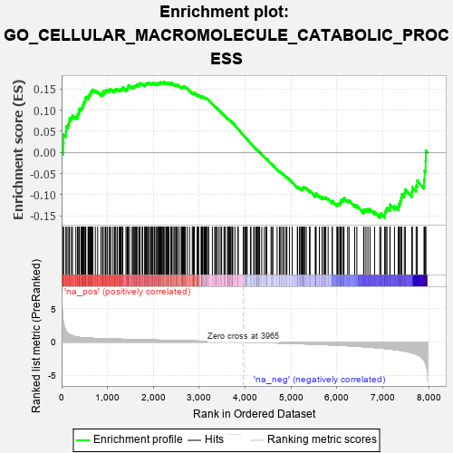
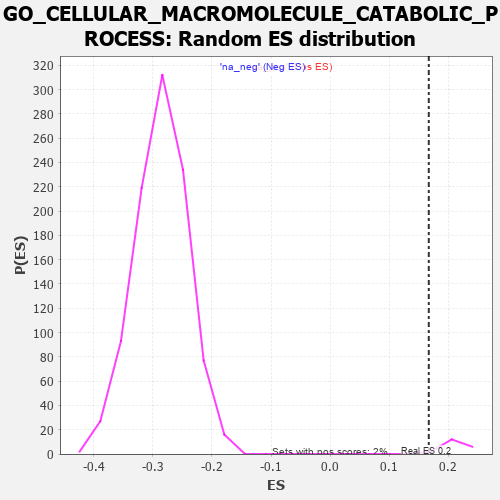

| | | Dataset | 7d |
| Phenotype | NoPhenotypeAvailable |
| Upregulated in class | na_pos |
| GeneSet | GO_CELLULAR_MACROMOLECULE_CATABOLIC_PROCESS |
| Enrichment Score (ES) | 0.16670972 |
| Normalized Enrichment Score (NES) | 0.78675324 |
| Nominal p-value | 1.0 |
| FDR q-value | 0.91582614 |
| FWER p-Value | 1.0 |
Table: GSEA Results Summary

Fig 1: Enrichment plot: GO_CELLULAR_MACROMOLECULE_CATABOLIC_PROCESS
Profile of the Running ES Score & Positions of GeneSet Members on the Rank Ordered List
| PROBE | GENE SYMBOL | GENE_TITLE | RANK IN GENE LIST | RANK METRIC SCORE | RUNNING ES | CORE ENRICHMENT | | 1 | SPO11 | | | 35 | 3.371 | 0.0215 | Yes |
| 2 | PCBP4 | | | 44 | 2.875 | 0.0427 | Yes |
| 3 | UBE2K | | | 94 | 1.739 | 0.0498 | Yes |
| 4 | TRIM2 | | | 100 | 1.628 | 0.0617 | Yes |
| 5 | DESI1 | | | 138 | 1.332 | 0.0672 | Yes |
| 6 | AXIN1 | | | 166 | 1.159 | 0.0727 | Yes |
| 7 | BUB3 | | | 172 | 1.143 | 0.0809 | Yes |
| 8 | SPSB4 | | | 214 | 1.019 | 0.0834 | Yes |
| 9 | DCST1 | | | 237 | 0.959 | 0.0880 | Yes |
| 10 | JKAMP | | | 310 | 0.804 | 0.0848 | Yes |
| 11 | CNOT7 | | | 348 | 0.750 | 0.0858 | Yes |
| 12 | GSK3A | | | 351 | 0.745 | 0.0913 | Yes |
| 13 | POP1 | | | 376 | 0.720 | 0.0937 | Yes |
| 14 | AXIN2 | | | 383 | 0.713 | 0.0985 | Yes |
| 15 | BAX | | | 387 | 0.711 | 0.1036 | Yes |
| 16 | MLH1 | | | 423 | 0.679 | 0.1043 | Yes |
| 17 | SUFU | | | 443 | 0.665 | 0.1070 | Yes |
| 18 | CNOT6 | | | 462 | 0.655 | 0.1097 | Yes |
| 19 | LRP1 | | | 470 | 0.648 | 0.1138 | Yes |
| 20 | CDC20 | | | 480 | 0.644 | 0.1176 | Yes |
| 21 | SPSB1 | | | 494 | 0.631 | 0.1208 | Yes |
| 22 | CNOT2 | | | 514 | 0.625 | 0.1231 | Yes |
| 23 | GET4 | | | 520 | 0.623 | 0.1273 | Yes |
| 24 | HTRA2 | | | 527 | 0.621 | 0.1313 | Yes |
| 25 | APEX1 | | | 577 | 0.604 | 0.1296 | Yes |
| 26 | CCNB1 | | | 581 | 0.601 | 0.1339 | Yes |
| 27 | FBXW8 | | | 601 | 0.594 | 0.1360 | Yes |
| 28 | NEMF | | | 620 | 0.589 | 0.1382 | Yes |
| 29 | GLMN | | | 632 | 0.583 | 0.1413 | Yes |
| 30 | SMG9 | | | 643 | 0.579 | 0.1445 | Yes |
| 31 | PARN | | | 660 | 0.572 | 0.1468 | Yes |
| 32 | FAF2 | | | 680 | 0.566 | 0.1487 | Yes |
| 33 | WDR61 | | | 734 | 0.549 | 0.1461 | Yes |
| 34 | UCHL3 | | | 785 | 0.536 | 0.1437 | Yes |
| 35 | AMFR | | | 856 | 0.518 | 0.1386 | Yes |
| 36 | HMGB2 | | | 892 | 0.507 | 0.1380 | Yes |
| 37 | NSUN2 | | | 901 | 0.506 | 0.1408 | Yes |
| 38 | TMTC3 | | | 903 | 0.506 | 0.1446 | Yes |
| 39 | ADRM1 | | | 948 | 0.496 | 0.1427 | Yes |
| 40 | EDC4 | | | 957 | 0.494 | 0.1455 | Yes |
| 41 | ZPR1 | | | 967 | 0.491 | 0.1481 | Yes |
| 42 | DEDD2 | | | 999 | 0.484 | 0.1478 | Yes |
| 43 | AKT1 | | | 1040 | 0.476 | 0.1463 | Yes |
| 44 | TAF9 | | | 1046 | 0.475 | 0.1493 | Yes |
| 45 | AIFM1 | | | 1072 | 0.469 | 0.1497 | Yes |
| 46 | NTAN1 | | | 1120 | 0.459 | 0.1472 | Yes |
| 47 | PSMD7 | | | 1152 | 0.454 | 0.1466 | Yes |
| 48 | GRSF1 | | | 1164 | 0.452 | 0.1487 | Yes |
| 49 | PSMD2 | | | 1181 | 0.450 | 0.1501 | Yes |
| 50 | KCTD6 | | | 1213 | 0.444 | 0.1495 | Yes |
| 51 | SMG8 | | | 1251 | 0.438 | 0.1481 | Yes |
| 52 | CNOT3 | | | 1274 | 0.435 | 0.1486 | Yes |
| 53 | DKC1 | | | 1292 | 0.431 | 0.1497 | Yes |
| 54 | NRDE2 | | | 1320 | 0.425 | 0.1495 | Yes |
| 55 | RNF11 | | | 1330 | 0.423 | 0.1516 | Yes |
| 56 | UBR2 | | | 1334 | 0.423 | 0.1545 | Yes |
| 57 | NOCT | | | 1402 | 0.409 | 0.1489 | Yes |
| 58 | LSM4 | | | 1426 | 0.405 | 0.1490 | Yes |
| 59 | RBM10 | | | 1430 | 0.404 | 0.1518 | Yes |
| 60 | LSM6 | | | 1444 | 0.402 | 0.1532 | Yes |
| 61 | RBX1 | | | 1445 | 0.401 | 0.1563 | Yes |
| 62 | HBS1L | | | 1454 | 0.399 | 0.1583 | Yes |
| 63 | TAF15 | | | 1481 | 0.393 | 0.1580 | Yes |
| 64 | SCO1 | | | 1536 | 0.385 | 0.1540 | Yes |
| 65 | SOCS6 | | | 1560 | 0.381 | 0.1539 | Yes |
| 66 | BOLL | | | 1561 | 0.381 | 0.1569 | Yes |
| 67 | CDC27 | | | 1585 | 0.377 | 0.1568 | Yes |
| 68 | RNF6 | | | 1605 | 0.373 | 0.1572 | Yes |
| 69 | N4BP1 | | | 1622 | 0.370 | 0.1580 | Yes |
| 70 | DERL2 | | | 1632 | 0.368 | 0.1596 | Yes |
| 71 | DDB1 | | | 1642 | 0.366 | 0.1613 | Yes |
| 72 | TNPO1 | | | 1684 | 0.359 | 0.1588 | Yes |
| 73 | ELOC | | | 1685 | 0.359 | 0.1615 | Yes |
| 74 | ERCC8 | | | 1699 | 0.357 | 0.1626 | Yes |
| 75 | ZNRF1 | | | 1709 | 0.355 | 0.1642 | Yes |
| 76 | LSM7 | | | 1754 | 0.344 | 0.1611 | Yes |
| 77 | AGO2 | | | 1767 | 0.343 | 0.1622 | Yes |
| 78 | PSMD4 | | | 1811 | 0.335 | 0.1592 | Yes |
| 79 | FMR1 | | | 1816 | 0.334 | 0.1613 | Yes |
| 80 | LSM2 | | | 1829 | 0.332 | 0.1623 | Yes |
| 81 | AP2S1 | | | 1846 | 0.329 | 0.1627 | Yes |
| 82 | PSMD6 | | | 1858 | 0.326 | 0.1638 | Yes |
| 83 | DCP1A | | | 1877 | 0.323 | 0.1640 | Yes |
| 84 | CUL3 | | | 1893 | 0.321 | 0.1645 | Yes |
| 85 | DDX6 | | | 1915 | 0.318 | 0.1642 | Yes |
| 86 | CUL5 | | | 1947 | 0.314 | 0.1626 | Yes |
| 87 | ARMC8 | | | 1961 | 0.312 | 0.1633 | Yes |
| 88 | BRSK2 | | | 1979 | 0.308 | 0.1635 | Yes |
| 89 | MYEF2 | | | 1992 | 0.306 | 0.1643 | Yes |
| 90 | UBXN6 | | | 2021 | 0.302 | 0.1630 | Yes |
| 91 | VPS25 | | | 2033 | 0.300 | 0.1639 | Yes |
| 92 | TMUB2 | | | 2070 | 0.295 | 0.1615 | Yes |
| 93 | DDX49 | | | 2073 | 0.295 | 0.1635 | Yes |
| 94 | LSM1 | | | 2098 | 0.291 | 0.1626 | Yes |
| 95 | UBA6 | | | 2114 | 0.289 | 0.1629 | Yes |
| 96 | SNF8 | | | 2119 | 0.288 | 0.1646 | Yes |
| 97 | PSME4 | | | 2143 | 0.285 | 0.1639 | Yes |
| 98 | DTL | | | 2154 | 0.284 | 0.1647 | Yes |
| 99 | CNOT4 | | | 2161 | 0.283 | 0.1662 | Yes |
| 100 | UBE2A | | | 2183 | 0.278 | 0.1656 | Yes |
| 101 | HM13 | | | 2205 | 0.276 | 0.1650 | Yes |
| 102 | MYLIP | | | 2225 | 0.272 | 0.1646 | Yes |
| 103 | CDK2 | | | 2226 | 0.272 | 0.1667 | Yes |
| 104 | PSMF1 | | | 2251 | 0.268 | 0.1657 | No |
| 105 | LSM3 | | | 2282 | 0.263 | 0.1638 | No |
| 106 | NBAS | | | 2299 | 0.260 | 0.1637 | No |
| 107 | UBE4B | | | 2313 | 0.258 | 0.1640 | No |
| 108 | TMUB1 | | | 2326 | 0.257 | 0.1645 | No |
| 109 | FAF1 | | | 2340 | 0.255 | 0.1647 | No |
| 110 | NCBP2 | | | 2383 | 0.248 | 0.1612 | No |
| 111 | PELO | | | 2386 | 0.247 | 0.1628 | No |
| 112 | HIPK2 | | | 2389 | 0.247 | 0.1645 | No |
| 113 | OMA1 | | | 2408 | 0.244 | 0.1640 | No |
| 114 | FEN1 | | | 2446 | 0.237 | 0.1610 | No |
| 115 | UBXN1 | | | 2467 | 0.232 | 0.1602 | No |
| 116 | UBAC2 | | | 2488 | 0.229 | 0.1594 | No |
| 117 | HUWE1 | | | 2506 | 0.225 | 0.1589 | No |
| 118 | MANBA | | | 2514 | 0.225 | 0.1598 | No |
| 119 | NGLY1 | | | 2522 | 0.224 | 0.1606 | No |
| 120 | PSMD5 | | | 2560 | 0.218 | 0.1575 | No |
| 121 | PDE12 | | | 2608 | 0.211 | 0.1530 | No |
| 122 | PATL1 | | | 2610 | 0.210 | 0.1545 | No |
| 123 | PUM2 | | | 2627 | 0.209 | 0.1540 | No |
| 124 | EIF3E | | | 2634 | 0.207 | 0.1548 | No |
| 125 | KAT5 | | | 2644 | 0.206 | 0.1553 | No |
| 126 | VPS4A | | | 2654 | 0.205 | 0.1557 | No |
| 127 | MUS81 | | | 2673 | 0.202 | 0.1549 | No |
| 128 | DDI2 | | | 2691 | 0.200 | 0.1542 | No |
| 129 | CSDE1 | | | 2693 | 0.200 | 0.1556 | No |
| 130 | CUL1 | | | 2735 | 0.193 | 0.1518 | No |
| 131 | XRN1 | | | 2786 | 0.185 | 0.1467 | No |
| 132 | CLN6 | | | 2847 | 0.177 | 0.1403 | No |
| 133 | UCHL5 | | | 2864 | 0.172 | 0.1395 | No |
| 134 | DCPS | | | 2873 | 0.170 | 0.1398 | No |
| 135 | CIRBP | | | 2876 | 0.170 | 0.1409 | No |
| 136 | CUL2 | | | 2882 | 0.169 | 0.1415 | No |
| 137 | MTM1 | | | 2893 | 0.168 | 0.1415 | No |
| 138 | SOCS4 | | | 2953 | 0.157 | 0.1351 | No |
| 139 | XPO1 | | | 2960 | 0.156 | 0.1355 | No |
| 140 | RNH1 | | | 2977 | 0.153 | 0.1346 | No |
| 141 | GID8 | | | 2978 | 0.153 | 0.1358 | No |
| 142 | UBE2S | | | 2980 | 0.153 | 0.1368 | No |
| 143 | UFL1 | | | 3041 | 0.144 | 0.1301 | No |
| 144 | BIRC6 | | | 3047 | 0.143 | 0.1306 | No |
| 145 | MAEA | | | 3048 | 0.143 | 0.1317 | No |
| 146 | PAN3 | | | 3054 | 0.142 | 0.1321 | No |
| 147 | KEAP1 | | | 3063 | 0.141 | 0.1322 | No |
| 148 | RBBP6 | | | 3066 | 0.141 | 0.1330 | No |
| 149 | CUL4A | | | 3097 | 0.137 | 0.1302 | No |
| 150 | GPX1 | | | 3109 | 0.135 | 0.1298 | No |
| 151 | WWP1 | | | 3127 | 0.133 | 0.1286 | No |
| 152 | SMG7 | | | 3141 | 0.131 | 0.1279 | No |
| 153 | EDEM2 | | | 3145 | 0.131 | 0.1285 | No |
| 154 | ERN2 | | | 3160 | 0.129 | 0.1277 | No |
| 155 | PSMD9 | | | 3179 | 0.125 | 0.1263 | No |
| 156 | FZR1 | | | 3205 | 0.122 | 0.1240 | No |
| 157 | SMG5 | | | 3285 | 0.108 | 0.1146 | No |
| 158 | CHFR | | | 3335 | 0.099 | 0.1090 | No |
| 159 | RBM8A | | | 3355 | 0.096 | 0.1072 | No |
| 160 | SMAD7 | | | 3369 | 0.093 | 0.1063 | No |
| 161 | TUT4 | | | 3394 | 0.090 | 0.1038 | No |
| 162 | AP2A2 | | | 3433 | 0.085 | 0.0996 | No |
| 163 | CNOT1 | | | 3473 | 0.081 | 0.0951 | No |
| 164 | ERI1 | | | 3486 | 0.079 | 0.0942 | No |
| 165 | NELL1 | | | 3538 | 0.070 | 0.0881 | No |
| 166 | GID4 | | | 3550 | 0.067 | 0.0872 | No |
| 167 | DERL1 | | | 3570 | 0.065 | 0.0852 | No |
| 168 | WAC | | | 3618 | 0.056 | 0.0795 | No |
| 169 | CBL | | | 3621 | 0.056 | 0.0797 | No |
| 170 | RIC1 | | | 3627 | 0.055 | 0.0795 | No |
| 171 | LTN1 | | | 3647 | 0.052 | 0.0774 | No |
| 172 | FBXL4 | | | 3659 | 0.049 | 0.0763 | No |
| 173 | SKP1 | | | 3663 | 0.049 | 0.0763 | No |
| 174 | STT3B | | | 3676 | 0.047 | 0.0751 | No |
| 175 | DHX9 | | | 3693 | 0.044 | 0.0734 | No |
| 176 | HSF1 | | | 3718 | 0.039 | 0.0706 | No |
| 177 | CDC16 | | | 3724 | 0.038 | 0.0702 | No |
| 178 | CASC3 | | | 3727 | 0.037 | 0.0702 | No |
| 179 | UBE3B | | | 3776 | 0.031 | 0.0642 | No |
| 180 | SMG1 | | | 3843 | 0.021 | 0.0558 | No |
| 181 | FEM1A | | | 3847 | 0.021 | 0.0556 | No |
| 182 | ATE1 | | | 3958 | 0.001 | 0.0413 | No |
| 183 | VPS35 | | | 3989 | -0.006 | 0.0374 | No |
| 184 | UBR4 | | | 3992 | -0.006 | 0.0372 | No |
| 185 | RNF14 | | | 4013 | -0.010 | 0.0347 | No |
| 186 | TOR1A | | | 4030 | -0.013 | 0.0327 | No |
| 187 | SGTB | | | 4044 | -0.015 | 0.0311 | No |
| 188 | MTOR | | | 4114 | -0.025 | 0.0223 | No |
| 189 | OGA | | | 4126 | -0.027 | 0.0211 | No |
| 190 | AP2B1 | | | 4185 | -0.039 | 0.0139 | No |
| 191 | VPS11 | | | 4202 | -0.041 | 0.0121 | No |
| 192 | GPC1 | | | 4238 | -0.048 | 0.0079 | No |
| 193 | AGAP3 | | | 4251 | -0.050 | 0.0067 | No |
| 194 | PCID2 | | | 4258 | -0.051 | 0.0064 | No |
| 195 | PSME3 | | | 4280 | -0.056 | 0.0041 | No |
| 196 | UBE2H | | | 4286 | -0.058 | 0.0039 | No |
| 197 | HERC2 | | | 4302 | -0.060 | 0.0024 | No |
| 198 | AUP1 | | | 4315 | -0.062 | 0.0013 | No |
| 199 | SPSB3 | | | 4361 | -0.070 | -0.0040 | No |
| 200 | PRR5L | | | 4418 | -0.080 | -0.0107 | No |
| 201 | SYVN1 | | | 4454 | -0.085 | -0.0146 | No |
| 202 | NEDD8 | | | 4465 | -0.087 | -0.0152 | No |
| 203 | LRRK2 | | | 4467 | -0.087 | -0.0147 | No |
| 204 | BAG6 | | | 4563 | -0.108 | -0.0262 | No |
| 205 | VPS28 | | | 4582 | -0.114 | -0.0277 | No |
| 206 | NUB1 | | | 4604 | -0.119 | -0.0295 | No |
| 207 | CRBN | | | 4695 | -0.138 | -0.0401 | No |
| 208 | EDEM3 | | | 4746 | -0.148 | -0.0455 | No |
| 209 | UBE4A | | | 4755 | -0.149 | -0.0454 | No |
| 210 | CLPP | | | 4778 | -0.153 | -0.0470 | No |
| 211 | FBXW7 | | | 4816 | -0.161 | -0.0506 | No |
| 212 | VPS36 | | | 4845 | -0.167 | -0.0530 | No |
| 213 | CLU | | | 4889 | -0.174 | -0.0572 | No |
| 214 | TLK2 | | | 4909 | -0.179 | -0.0583 | No |
| 215 | DXO | | | 4964 | -0.191 | -0.0638 | No |
| 216 | WDR81 | | | 5024 | -0.203 | -0.0699 | No |
| 217 | UBE2Z | | | 5137 | -0.234 | -0.0827 | No |
| 218 | KCTD5 | | | 5141 | -0.235 | -0.0813 | No |
| 219 | HDAC6 | | | 5183 | -0.244 | -0.0847 | No |
| 220 | ATM | | | 5210 | -0.249 | -0.0862 | No |
| 221 | TMF1 | | | 5225 | -0.251 | -0.0861 | No |
| 222 | SND1 | | | 5244 | -0.256 | -0.0864 | No |
| 223 | IDE | | | 5252 | -0.258 | -0.0853 | No |
| 224 | PTEN | | | 5262 | -0.261 | -0.0845 | No |
| 225 | CDK1 | | | 5264 | -0.262 | -0.0826 | No |
| 226 | EPHA4 | | | 5273 | -0.265 | -0.0816 | No |
| 227 | RAB7A | | | 5302 | -0.271 | -0.0831 | No |
| 228 | UBR3 | | | 5332 | -0.281 | -0.0847 | No |
| 229 | SUMO2 | | | 5402 | -0.296 | -0.0914 | No |
| 230 | LATS1 | | | 5412 | -0.298 | -0.0903 | No |
| 231 | TRIM9 | | | 5526 | -0.327 | -0.1025 | No |
| 232 | PCBP2 | | | 5539 | -0.331 | -0.1015 | No |
| 233 | EDEM1 | | | 5541 | -0.331 | -0.0990 | No |
| 234 | SIDT2 | | | 5542 | -0.331 | -0.0965 | No |
| 235 | LARP1 | | | 5616 | -0.349 | -0.1033 | No |
| 236 | PSMD1 | | | 5674 | -0.367 | -0.1079 | No |
| 237 | CASP8 | | | 5678 | -0.369 | -0.1054 | No |
| 238 | CLPX | | | 5717 | -0.381 | -0.1074 | No |
| 239 | PDCL3 | | | 5738 | -0.388 | -0.1070 | No |
| 240 | CDC23 | | | 5756 | -0.394 | -0.1062 | No |
| 241 | PAN2 | | | 5807 | -0.408 | -0.1095 | No |
| 242 | SET | | | 5895 | -0.434 | -0.1175 | No |
| 243 | VLDLR | | | 5898 | -0.434 | -0.1144 | No |
| 244 | TUT7 | | | 5997 | -0.471 | -0.1235 | No |
| 245 | XBP1 | | | 6011 | -0.475 | -0.1215 | No |
| 246 | PPT1 | | | 6038 | -0.485 | -0.1211 | No |
| 247 | UBE3C | | | 6065 | -0.495 | -0.1207 | No |
| 248 | USP9Y | | | 6075 | -0.498 | -0.1180 | No |
| 249 | PLK1 | | | 6082 | -0.500 | -0.1149 | No |
| 250 | UBB | | | 6090 | -0.503 | -0.1119 | No |
| 251 | UBXN4 | | | 6122 | -0.511 | -0.1120 | No |
| 252 | RNF8 | | | 6147 | -0.518 | -0.1111 | No |
| 253 | ROCK1 | | | 6152 | -0.520 | -0.1076 | No |
| 254 | RGN | | | 6233 | -0.547 | -0.1138 | No |
| 255 | UBA1 | | | 6263 | -0.559 | -0.1133 | No |
| 256 | ISG15 | | | 6385 | -0.608 | -0.1243 | No |
| 257 | ABCA2 | | | 6433 | -0.634 | -0.1255 | No |
| 258 | CLN3 | | | 6580 | -0.699 | -0.1391 | No |
| 259 | RNF41 | | | 6588 | -0.703 | -0.1346 | No |
| 260 | WWTR1 | | | 6631 | -0.729 | -0.1344 | No |
| 261 | RFFL | | | 6674 | -0.749 | -0.1341 | No |
| 262 | GSK3B | | | 6719 | -0.768 | -0.1338 | No |
| 263 | GIPC1 | | | 6819 | -0.826 | -0.1403 | No |
| 264 | MIB1 | | | 6932 | -0.890 | -0.1480 | No |
| 265 | FBXL2 | | | 6956 | -0.911 | -0.1440 | No |
| 266 | RNF34 | | | 7040 | -0.963 | -0.1473 | No |
| 267 | FBXL5 | | | 7046 | -0.965 | -0.1405 | No |
| 268 | MFSD8 | | | 7067 | -0.977 | -0.1356 | No |
| 269 | BBS7 | | | 7089 | -0.988 | -0.1306 | No |
| 270 | DDX5 | | | 7152 | -1.037 | -0.1307 | No |
| 271 | UFD1 | | | 7157 | -1.040 | -0.1232 | No |
| 272 | REXO4 | | | 7253 | -1.126 | -0.1268 | No |
| 273 | CYLD | | | 7333 | -1.206 | -0.1278 | No |
| 274 | AMN1 | | | 7352 | -1.222 | -0.1207 | No |
| 275 | FBXL7 | | | 7380 | -1.245 | -0.1145 | No |
| 276 | CELA1 | | | 7399 | -1.265 | -0.1071 | No |
| 277 | UBC | | | 7410 | -1.274 | -0.0985 | No |
| 278 | HELZ2 | | | 7466 | -1.356 | -0.0952 | No |
| 279 | XRN2 | | | 7488 | -1.384 | -0.0872 | No |
| 280 | PKD1 | | | 7628 | -1.611 | -0.0929 | No |
| 281 | TAF1 | | | 7643 | -1.633 | -0.0821 | No |
| 282 | DCP2 | | | 7724 | -1.833 | -0.0783 | No |
| 283 | CASP3 | | | 7747 | -1.902 | -0.0664 | No |
| 284 | CAV3 | | | 7896 | -2.739 | -0.0645 | No |
| 285 | PSMD3 | | | 7907 | -2.887 | -0.0435 | No |
| 286 | PSMD8 | | | 7931 | -3.286 | -0.0210 | No |
| 287 | ARRB1 | | | 7935 | -3.377 | 0.0047 | No |
Table: GSEA details [plain text format]

Fig 2: GO_CELLULAR_MACROMOLECULE_CATABOLIC_PROCESS: Random ES distribution
Gene set null distribution of ES for GO_CELLULAR_MACROMOLECULE_CATABOLIC_PROCESS